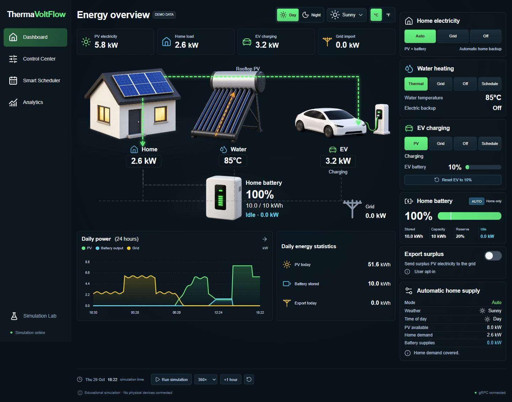

01WEB APP
ThermaVoltFlowSimulator
Wat verandert er als je energie slimmer inzet?
Simuleer zonnepanelen, een thuisbatterij, het laden van je EV en warm water in één dashboard. Je ziet meteen wat het weer, je instellingen en je planning doen met de energiestromen en je besparing.
- Zonnepanelen, thuisbatterij, EV en warm water in één simulatie
- Direct zien wat weer en planning doen
- Gebouwd met Codex, via agentic coding
